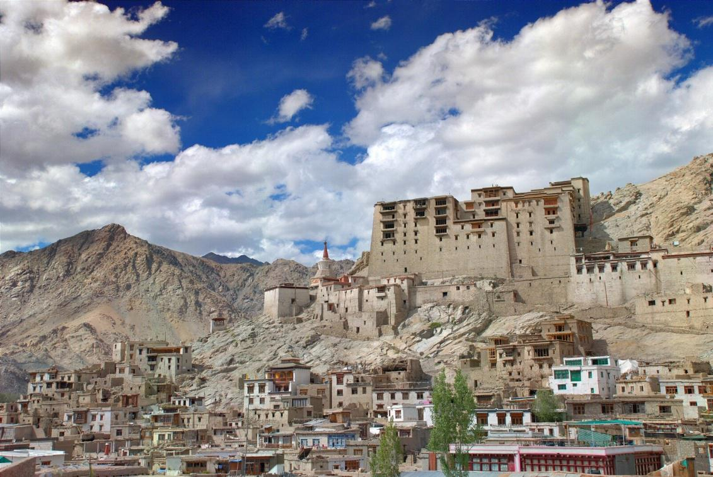
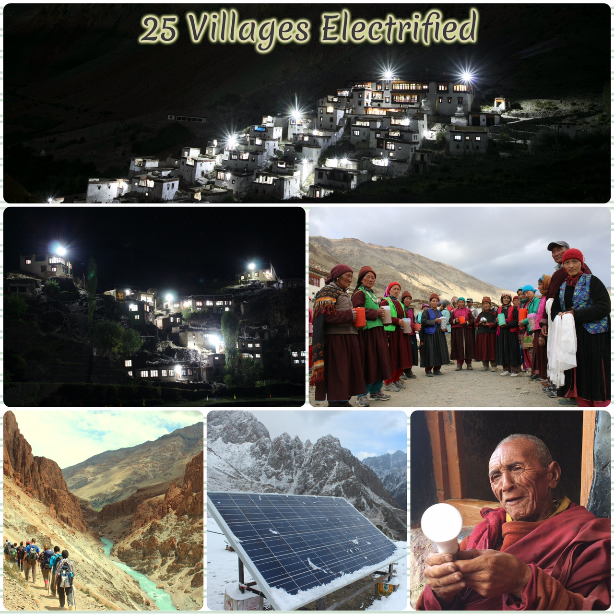

Ladakh ("land of high passes") is a region of north India in the state of Jammu and Kashmir (J&K), which currently
extends from the KuenLun mountain range to the great Himalayas in the south, inhabited by people of both
Indo-Aryan and Tibetan descent. It is one of the most sparsely populated regions in world, with its culture
and histories are closely related to that of the Tibet region. Ladakh is located at an altitude ranging between
2900m and 5900m. This makes it one of the most elevated and coldest inhabited regions of the world. The winter
temperatures drop to as low as -30 Deg C., with most areas becoming inaccessible due to heavy snowfall. The
region itself cannot be accessed from October to May as the two main highways connecting the region with
the rest of the country get blocked due to heavy snow. The only way to access the region is then by air transport.
Barley and wheat are the traditional crops. The region is known for its Pashmina goats, the wool from which
is used to make woolen clothes for export purpose. The main occupation and livelihood of the people are:
tourism, handicrafts, agriculture, and government jobs.
The region has approx. 100 remote villages most of which do not have access to grid based electricity. Some of these villages lay at an average trek distance of 4-5days from the nearest motorable roads. Due to the inhospitable terrain, the development of these villages has thus been very limited. There is no mobile connectivity in these villages and very few medical facilities limited to some villages only. All the people living in these villages come below the poverty line and are able to only sustain their basic livelihood from the crops they grow and animals they rear.

Global Himalayan Expedition (GHE) seeks to provide clean energy, education and wireless connectivity access through solar power, to help improve the living standards of the rural population. The initiative focuses on implementing a holistic development model for the rural un-electrified Himalayan communities by providing energy access through solar micro-grids for these remote villages located in the higher reaches of the Himalaya. GHE’s objective is to implement the solution in a sustainable, scalable and environmentally beneficial manner, leading to an overall development of the community and empowering the local village population. Energy access intervention has acted as a tool for further development and growth in these remote areas and has led to an increase in income and livelihood creation.

- GHE has till date electrified 25 villages since it began with its pilot model of DC based electrification in 2014.
- Installed a total of 110 micro-grids with a total capacity of 20.8 kW.
- GHE had created 15 home-stays in the villages that have been electrified.
- There has been an increase in income of approximately $30,000 across the 20 villages electrified through engagement in tourism.
- GHE has also trained 35 villagers as entry level solar grid technicians. GHE has indirectly and directly employed 43 villagers to assist in its expeditions, village surveys and the solar grid installations. Of this number, 15 have been women who are leading home-stay related activities.
- Saved approximately 63 tons of Kerosene on an annual basis and helped mitigate 157 tons of CO2 gases on an annual basis from these solar electrified villages.
Our solar micro-grid technological solution is based on Direct Current (DC) technology. This is an efficient solar system design for decentralized power generation as it involves no DC to AC conversion losses. The capacity of these micro-grids ranges from 150W to 250W. A typical 250W micro-grid solution can support up to 30 Nos. of LED lights. To support this technology, GHE has designed its own DC LED Lights. These are energy efficient LED Lights and provide 320 Lumens of light from just 2.5W of power. All our micro-grids are automatic in operation and switch ON whenever the sunlight is low and OFF when the sun is shining. Using a DC microgrid technology allows us to electrify a village with the minimum investment and the maximum impact.
- The remoteness of these villages does not allow convention power line to be extended to these villages because of the harsh mountain terrain.
- Since there are no medical facilities in these villages, risk of shock from AC circuit can be big health hazard, hence GHE has chosen DC technology to eliminate the health hazard from AC.
- Microgrids bind the community together connecting 4-5 households together who share electricity from the grid.
include "footer.html"
include "scripts.html"